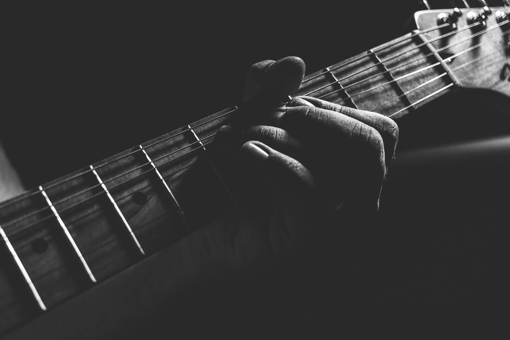
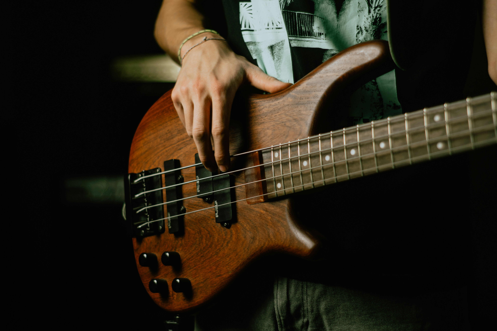
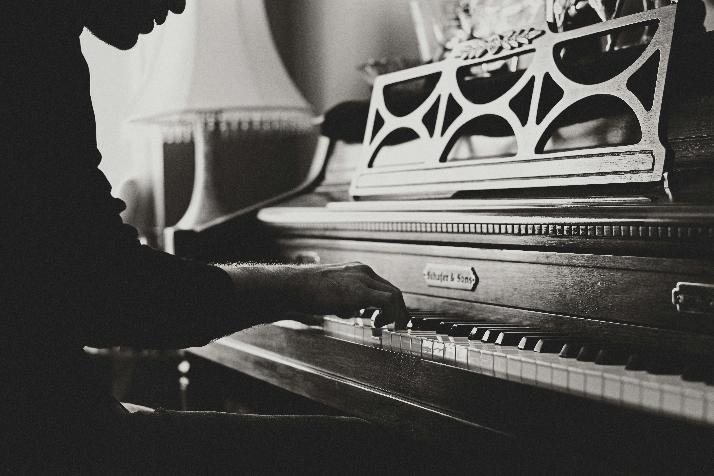
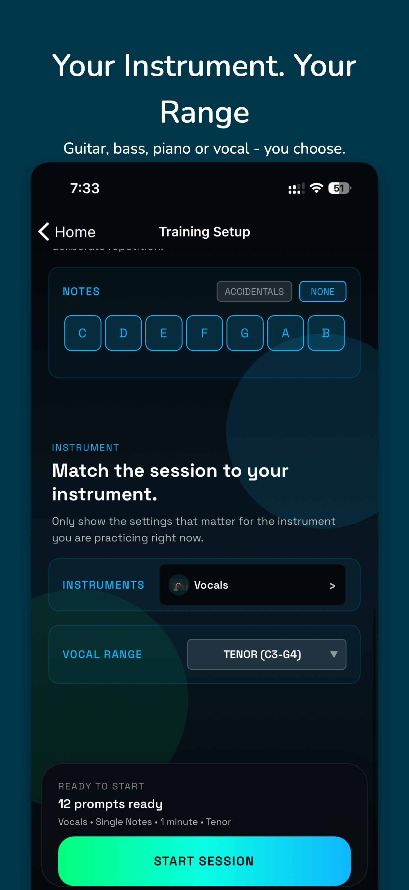
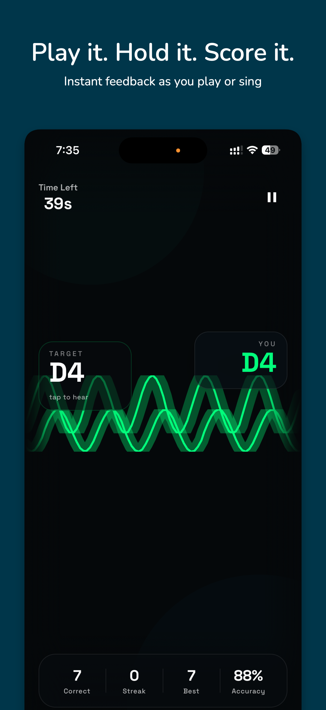
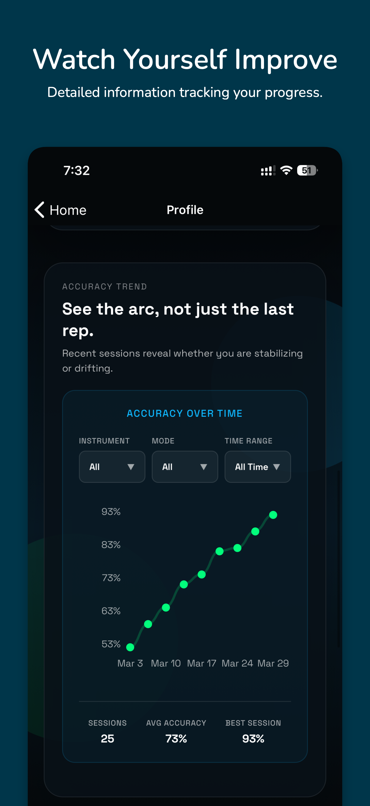
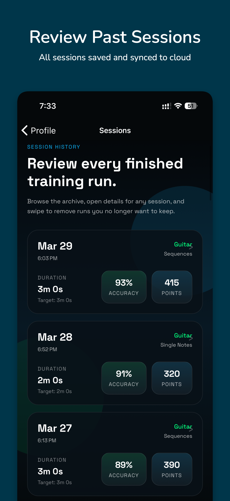

Set your range
Pick guitar, bass, piano, or vocals. Control strings, frets, notes, and octaves so sessions match your actual practice goals.
PitchStill gives you a target note, listens through your microphone, and confirms whether you actually hit it on guitar, bass, piano, or voice.

PitchStill is designed for repetition. Choose an instrument, narrow the note pool, and train the exact pitch responses you want to improve.
Pick guitar, bass, piano, or vocals. Control strings, frets, notes, and octaves so sessions match your actual practice goals.
The app plays a note and shows the target. You play or sing it back while PitchStill listens in real time.
Review accuracy, score, streaks, reaction time, and session history to see what is getting sharper over time.
Custom note pools for guitar, bass, piano, and vocal range training.
Premium mode includes chord inversions and scale patterns for deeper drills.
Every session contributes to streaks, session history, and long-term statistics.
Microphone input is used for active training only and processed on device.

Standard and half-step-down practice with string and fret-range control.

Target note accuracy with ranges that fit your fretboard and technique.

Train within a chosen keyboard range and reinforce clean pitch recall.

Soprano, alto, tenor, and bass range options for direct voice training.




PitchStill uses the microphone during active sessions to detect pitch. Audio is not recorded, stored, or sent anywhere for training playback.
Download PitchStill on iPhone and start building faster, more accurate note recall.